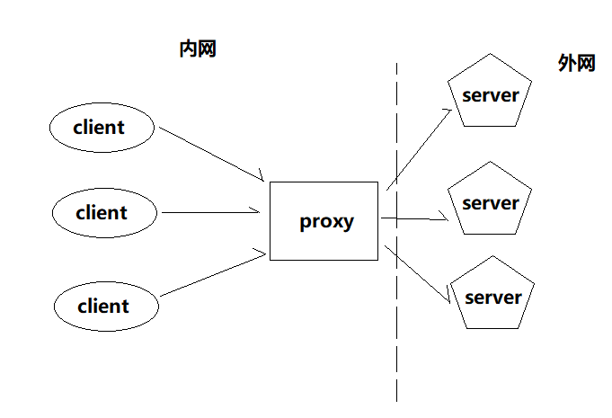
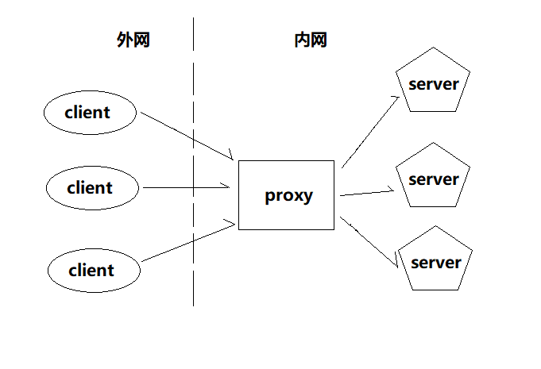

正向代理

是一个位于客户端和原始服务器(origin server)之间的服务器，为了从原始服务器取得内容，客户端向代理发送一个请求并指定目标(原始服务器)，然后代理向原始服务器转交请求并将获得的内容返回给客户端（目的是为了保护客户端用户）
配置文件：
server {
# 配置DNS解析IP地址，比如 Google Public DNS，以及超时时间（5秒）
resolver 8.8.8.8; # 必需
resolver_timeout 5s;
# 监听端口
listen 8080;
access_log /home/reistlin/logs/proxy.access.log;
error_log /home/reistlin/logs/proxy.error.log;
location / {
# 配置正向代理参数
proxy_pass $scheme://$host$request_uri;
# 解决如果URL中带"."后Nginx 503错误
proxy_set_header Host $http_host;
# 配置缓存大小
proxy_buffers 256 4k;
# 关闭磁盘缓存读写减少I/O
proxy_max_temp_file_size 0;
# 代理连接超时时间
proxy_connect_timeout 30;
# 配置代理服务器HTTP状态缓存时间
proxy_cache_valid 200 302 10m;
proxy_cache_valid 301 1h;
proxy_cache_valid any 1m;
}
}注意： 1.不要设置server_name指令
2.我们测试的时候可以使用谷歌浏览器，在谷歌浏览器的高级设置里面设置代理，代理地址就是我们nginx的 http://ip:端口号
反向代理

反向代理也是在客户端和服务器端的一个代理服务器，但是这个代理服务器的目的是用来保护服务器端的，当外网客户端来访问我们的服务器时为了避免暴露应用服务器的实际ip地址，我们会让客端访问代理服务器，然后代理服务器再根据客户端的请求去实际的应用服务器获取响应内容并返回客户端。
proxy_pass URL设置代理服务器的地址，可以是主机名称、IP地址加端口号等形式。
注意：1.当代理的是一组服务器时可以使用 upstream 指令来设置。
2. 当URL中含有uri时，（例如 "http://127.0.0.1:8080/"、"http://127.0.0.1:8080/demo.html"）不管客户端访问的是地址中的uri是什么，代理服务器都会代理到 URL的地址；当URL中不包含uri时（例如："http://127.0.0.1:8080"），那么当客户端访问服务器时，代理服务器会根据客户端请求的uri来访问具体的URL地址。
proxy_pass_request_body on|off用于配置是否将客户端的请求的请求体发送给代理服务器。
proxy_pass_request_headers on|off用于配置是否将客户端的请求的头信息发送给代理服务器。
proxy_set_header field value可以更改nginx接收到的客户端请求的请求头信息，然后将新的请求头信息发送给被代理的服务器。
proxy_set_body valuengin接收到客户端的请求后使用该指令可以修改request中的body体，然后将请求转发给代理服务器
proxy_connect_timeout timenginx服务器与被代理服务器之间尝试建立连接的的超时时间，默认为60s。
proxy_read_timeot timenginx服务器接收被代理服务器数据时最大的等待时间，默认为60s。
proxy_send_timeout timenginx服务器发送数据至被代理服务器的最大等待时间，例如60s内没有发出一个字节则默认断开连接，默认60s。
proxy_http_version 1.0|1.1nginx 服务器提供代理服务的http协议版本
proxy_method methodnginx服务器设置请求被代理服务器时使用的请求方法，一般为POST或者GET
proxy_ignore_client_abort on|off当客户端中断网络请求时，nginx服务是否中断对代理服务器的请求，默认off
proxy_ignore_headers field...nginx服务器接收到被代理服务器的响应数据后，不会处理被设置的头域
proxy_redirect redirect replacement; #使用replacement替换redirect
proxy_redirect default; #使用location块的uri替换掉 proxy_pass 后的变量
proxy_redirect off; #当前作用域下所有 proxy_redirect 指令全部失效如果需要修改从被代理服务器传来的应答头中的"Location"和"Refresh"字段，可以用这个指令设置
proxy_intercept_errors on|off该指令开启时，当被代理服务器返回http状态码为400或者大于400时，nginx服务器会使用自己定义（使用error_page指令）的响应错误页面，如果为off时直接返回状态码
proxy_next_upstream status当被代理的服务器是一个 使用upstream指令配置的一组服务器时，服务器组中的服务器遵循upstream指令配置的的轮训规则，同时也可以使用该指令来设置发生哪些异常时使用组内的下一个服务器处理请求。可选值：error | timeout | invalid_header | http_500 | http_502 | http_503 | http_504 | http_403 | http_404 | off ...；其中off指无法将请求发送给被代理服务器
proxy_ssl_session_reuse on|off用于配置是否使用基于SSL安全协议的的会话连接（https://）被代理服务器，默认为开启状态